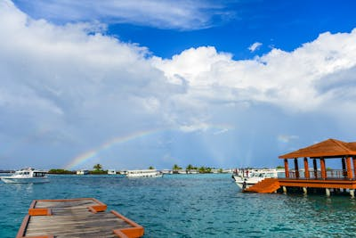

Tourism Overview
The ocean tourism sector generates billions of dollars annually due to people's fascination with the sea. Ocean tourism is leisure travel where the main activity center is the sea. There are many different types of ocean tourism, such as fishing trips, cruises, and ecotourism.
Cruising the oceans
One of the most well-liked types of maritime travel is taking a cruise. Cruise ships became necessary in the late 19th and early 20th centuries to transport passengers across the oceans. Many of these cruise ships offered passengers an opulent means of transportation, such as the tragic Titanic, which sank in 1912 and killed over 1,500 people. The majority of contemporary cruise ships run diesel fuel in place of the steam that once drove their engines.
Although cruise ships were required to cross the Atlantic, air travel by the middle of the 20th century made ocean voyages more affordable and quicker. An airplane can travel across the Atlantic in a few hours as opposed to the week that most cruise ships need. Cruise lines were no longer able to market their offerings as a way to get to and from vacation destinations. (A corporation that owns one or more cruise ships is known as a cruise line.) Cruise line operators had to change the way they conducted business because there was less of a need for cruise ships to cross oceans. They started to reframe the cruise experience as a vacation. Ships began visiting far-off places and providing additional amenities and activities.
Large ships that double as floating hotels for tourists make up today's cruise ships. Restaurants, stores, theaters, cinemas, and swimming pools are all features of cruise ships. Even college-level courses are offered onboard certain cruise liners. Cruise ships can be over 1,000 feet (305 meters) long, over 150,000 gross tons (a word used to indicate the size of a boat, ship, or barge), and taller than a 20-story skyscraper. Buildings of this kind are expensive to build, and their construction can cost hundreds of millions of dollars. Just 117 feet (36 meters) separates the length of the Queen Mary 2, the largest cruise ship in 2004 from the height of the Empire State Building. Even with the crew, the biggest cruise ships can accommodate close to 4,000 passengers.
The economy of the nations that are prominent cruise destinations benefit greatly from maritime tourism. Annually, around 8 million Americans go on cruises. An estimated $18 billion is contributed to the US economy annually by cruises. Over 25,000 Americans are directly employed by cruise lines. It is estimated that the cruise sector supports 250,000 jobs in the United States.
The Titanic
The Titanic sailed for the first time from Southampton, England, to New York City on April 10, 1912. The Titanic was the biggest and priciest ship ever built at the time. The Titanic measured about 269 meters in length and approximately 46,000 gross tons in length. There were 2,227 passengers and crew members on the Titanic. Merely 705 travelers arrived in New York City. After striking an iceberg (a huge chunk of ice) in the North Atlantic Ocean, the ship sank during the night of April 14 and the early hours of April 15, killing almost 1,500 passengers.

An amazing feat of engineering was the Titanic. The ship took three years to construct and cost more than $7.5 million, which was a significant amount in 1912. It had many dining areas, a library, a gym, and a swimming pool. Instead of being swift, the Titanic was intended to be spacious and opulent. It was moving at 24 miles per hour, or 21 knots. Mauritania, the fastest ship in the fleet at the time, could only reach 26 knots, or 30 miles per hour, far faster than this.
On April 14, 1912, at 11:40 p.m., the Titanic collided with an iceberg. There was not enough time to avert the collision because the iceberg was only a few hundred yards (meters) in front of the ship when it was seen. After a duration of two hours and forty minutes, the Titanic submerged into the chilly oceanic seas. The minimal number of lifeboats mandated by an antiquated British statute was only sixteen on the Titanic. A large number of needless deaths were caused by the lack of lifeboats. In response to the Titanic's distress signal, the ship Carpathia arrived on the site after the ship had sunk.
Up until September 1, 1985, when scientists Robert Ballard and Jean Louis Michel found the ship's remnants, the Titanic was buried under the ice. About 2.5 miles (4 kilometers) or 12,500 feet (3,810 meters) below the surface of the ocean is where the Titanic is located.
The seaside travel sector is heavily controlled. To navigate in international seas, all commercial ships, including cruise ships, need to be registered with a nation. Only nations who are members of the International Maritime Organization (IMO) are able to register ships. One of the UN's agencies is the IMO. The majority of the world's independent states are members of the United Nations, an organization whose goal is to advance security and peace. The Resolutions and Conventions on Maritime Safety of the IMO must be ratified by every nation that registers ships under its auspices. The promotion of maritime safety has been greatly aided by the cruise industry. Together with the IMO, the International Council of Cruise Lines (ICCL) is a voluntary organization that supports environmental preservation and maritime safety.
The country where a ship docks, known as the port state, may also place restrictions on cruise ships in addition to ship registration. The US is known for upholding safety regulations to the letter. Every oceangoing ship that calls at a U.S. Coast Guard port is inspected four times a year. Ships registered in the US are subject to additional regulations from the US, such as the need that the ship be American-built and owned. As a result, a large number of cruise ships register in other nations, such as the Bahamas, Norway, Liberia, and Panama. The registrations of over ninety cruise ships are in Panama and Liberia.